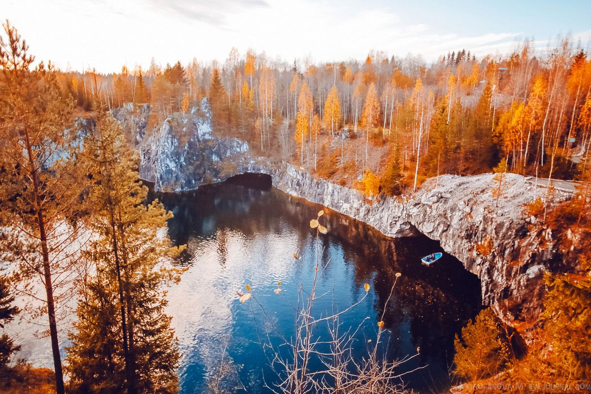

Russia is a country that has fascinated travelers for centuries with its vast landscapes, rich history, and diverse culture. From the grandeur of Moscow's Red Square to the picturesque canals of St. Petersburg, Russia offers a wealth of opportunities for exploration and discovery.
With its stunning natural beauty, from the snow-capped peaks of the Caucasus Mountains to the vast Siberian taiga, Russia also provides a unique chance to experience the great outdoors. Whether you're an adventure seeker, a history buff, or a lover of art and culture, there's something for everyone in Russia.
Name Ruskeala Mountain Park, Karelia
Place InformationIn the 17th-19th centuries, a half-kilometer long quarry was located on the site of the park, where white marble was mined that was later used for the construction of St Petersburg’s Kazan and St Isaac’s cathedrals. The quarry was flooded in the 20th century; then, in the 2000s, the surrounding area was furnished with walking trails and observation platforms and divers began to explore the dug-out caves and grottos. Tourists come to admire the lightly colored marble fossils, blue-turquoise water and greenery that frame the mountain peaks. Those who are not afraid of heights can view the park from above -whizzing down a zipline. According to tourists, the 20-second flight makes an impression that lasts a lifetime.